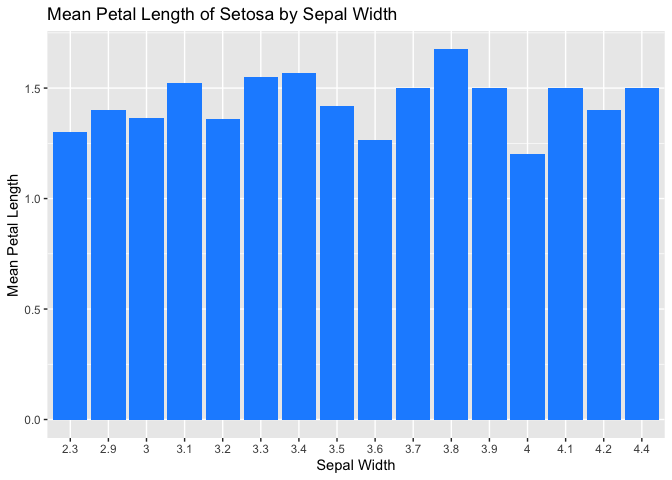
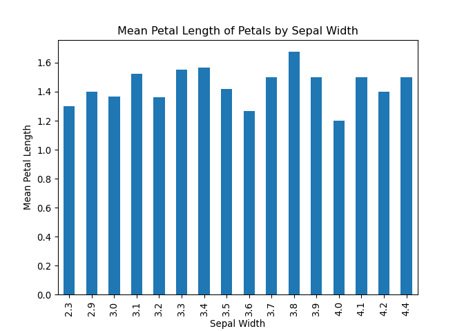
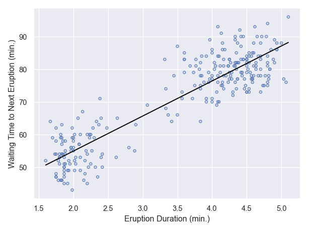

R and Python bilingualism¶
Welcome to the R and Python bilingualism reference guide!¶
If you’re fluent in one of these languages but hesitant to learn the other, you’re in the right place. The good news is that there are many similarities between R and Python that make it easy to switch between the two.
Both R and Python are widely used in data science and are open-source, meaning that they are free to use and constantly being improved by the community. They both have extensive libraries for data analysis, visualization, and machine learning. In fact, many of the libraries in both languages have similar names and functions, such as Pandas in Python and data.table in R.
While there are differences between the two languages, they can complement each other well. Python is versatile and scalable, making it ideal for large and complex projects such as web development and artificial intelligence. Object-oriented programming is easier and more common in Python, which is useful for large development teams. R, on the other hand, is known for its exceptional statistical capabilities and is often used in data analysis and modeling. Visualization is also easier in R, making it a popular choice for creating graphs and charts.
By learning both R and Python, you’ll be able to take advantage of the strengths of each language and create more efficient and robust data analysis workflows. Don’t let the differences between the two languages intimidate you - once you become familiar with one, learning the other will be much easier.
So, whether you’re a Python enthusiast looking to expand your statistical analysis capabilities, or an R user interested in exploring the world of web development and artificial intelligence, this guide will help you become bilingual in R and Python.
Try it yourself!¶
We have hidden most of the code in this notebook so that you can try to work it out yourself first if you like. We challenge you to pick the coding language you are least familiar with and try writing these workflows. If you need help, you can look at the code in the more familiar language, or check out our version in the less familiar for hints.
How to get help¶
If you know how to get help with one programming language, it’s not too different in a different one.
Offline in your coding environment¶
In both R and Python, you can print out the documentation for any
function or object using the help() function. For example:
help(print)
help(print)
Help on built-in function print in module builtins:
print(...)
print(value, ..., sep=' ', end='\n', file=sys.stdout, flush=False)
Prints the values to a stream, or to sys.stdout by default.
Optional keyword arguments:
file: a file-like object (stream); defaults to the current sys.stdout.
sep: string inserted between values, default a space.
end: string appended after the last value, default a newline.
flush: whether to forcibly flush the stream.
Official documentation pages¶
There are also some great documentation of Python, R, and third party
libraries on the internet. You can find the same information about
parameters, attributes, returns, and methods that you get by running
help(), online. We also recommend checking out the associated user
guides and plot gallerys!
Here are some of our favorite documentation pages. First, manuals for the programming languages:
-
The R manuals, formatted for the web
Note that if you are citing a program language, it is conventional to cite the manual for the version you used unless the authors specify otherwise.
Some of our favorite Python libraries for Earth Data Science:
-
xarray labeled multidimensional arrays and rioxarray arrays with coordinates
-
pandas data frames: tabular data and databases and geopandas data frames with coordinates
Some of our favorite R libraries for Earth Data Science:
-
ggplot2 data visualization (technically part of tidyverse but often used on its own) and cowplot figure layout
We recommend checking out official documentation before heading to sites like CodeAcademy or GeeksForGeeks that summarize documentation. They are often missing key details (but can have examples if you are having trouble finding those)
Books¶
There are many many books out there on how to learn both R and Python! We have heard from many learners who had success with the O’Reill books. In particular, you can check out the following freely available books for download or reading on the web:
- Think Python: How to Think Like a Computer Scientist by Dr. Allen Downey - This book is especially targeted at developing bilingualism, even though it is a Python book. It originally was published as Think Java, and then:
- R for Data Science by Hadley Wickham focuses on tidyverse-style R but covers a lot of the intricacies of the language as well.
Message boards¶
Finally, there are lots of sites out there where you can post and answer questions, or read other peoples’ questions and answers. Some of our favorites:
-
GitHub Issues pages for the project in question
-
Or you can search and see what comes up - there are other good but more obscure sources out there like Google groups pages
ChatGPT¶
We used ChatGPT to write the first version of this document because it’s pretty good at coding. Some things you can try:
-
Paste some code and ask ChatGPT what it does
-
Paste some code and ask ChatGPT to find bugs in it
-
Ask ChatGPT to write you code that does what you want
-
Ask ChatGPT to translate from R to Python or vice versa
While there’s no guarantee, we’ve gotten plenty of working answers out, with minimal changes needed. ChatGPT can be loaded as an extension to many development environments like VSCode, although you may hit a pay wall.
Packages: No need to write it from scratch¶
One thing Python and R have in common is they are extendable using external packages or libraries. You should have all the packages you need for today installed already.
Note that package and library are used interchangeably
Installing packages¶
R libraries are stored and managed in a repository called CRAN. You can download and install R packages with the install.packages() function:
R code:
# Install the dplyr package from CRAN
install.packages("dplyr")
Installing Python packages can be trickier than installing R packages.
Python libraries are stored and managed in a few different repositories
and their dependencies are not regulated as strictly as R libraries are
in CRAN. Python’s default package manager pip can be used in a
terminal or command line to install packages from the PyPI repository,
and this is a good solution if you need to install a single simple
package, like the requests package that provides a clean interface for
downloads. However, pip has long had some challenges, which you are
very likely to run into if you are using a package that requires the
GDAL library for coordinate transformations (like cartopy, rioxarray
or geopandas).
So what is an earth scientist to do? Most packages can also be installed
from the Anaconda repository by using conda install ... or better yet
mamba install .... mamba is a version of conda that is much faster
at solving environments. For most packages, we also recommending
specifying the conda-forge channel, as below:
bash code to install Python packages:
# First install mamba with conda if needed
conda install -c conda-forge mamba
# Install the pandas package from Anaconda
mamba install -c conda-forge pandas
It is common to install all the packages you need at once to keep from
boxing yourself into a corner with incompatible version numbers, or to
facilitate packaging your own library. In R, the renv library has a
number of tools for enviroment management; in Python, your best bet is
mamba. You should have everything you need already if you are working
on JetStream2. However, if you want to run this code on your own
computer, you can go ahead and install the R and Python environments as
follows, provided that you have renv and mamba installed:
renv::install()
mamba env create -f environment.yml
For the Python environment to work within an RMarkdown file, you may need to run the following code in R:
library(reticulate)
Sys.setenv(
RETICULATE_PYTHON=path.expand(
'~/opt/miniconda3/envs/earth-analytics-python/bin/python'))
use_condaenv('earth-analytics-python')
Loading libraries in R and Python¶
In R, libraries can be loaded using the library() function:
R code:
# Load the dplyr library
library(dplyr)
In Python, libraries can be loaded using the import statement. Here’s an example:
Python code:
# Load the pandas library
import pandas as pd
Note that the package or library must be installed from the respective repository before it can be loaded. Also, make sure you have the correct repository specified in your system before installing packages. By default, R uses CRAN as its primary repository, whereas Anaconda uses its own repository by default.
Importing libraries from R imports all the functions inside the library
under their own name. For example, once you have installed the r package
readr, you can use the included function read.csv() directly. On the
other hand, with a typical Python import like the one for pandas
above, you need to specify the package, e.g. pd.read_csv. This can be
cumbersome if you have to type the package name a lot (that’s why we
import pandas as pd instead of import pandas – our way we only have
to type out the two-letter alias pd). On the other hand, it can also
be really handy if you are trying to figure out what packages you need
to install to use a function in your own code.
GOTCHA ALERT: The dot
.is a special character in Python, but not in R. It is kind of like the/in your file system; instead of navigating your file tree, it navigates a tree structure like a class or a library.
reticulate - Why choose?¶
The reticulate package lets you run share variables between R and Python.
GOTCHA ALERT: Note that you will need to set the
RETICULATE_PYTHONenvironment variable correctly in order to get Python to work usingreticulate. The easiest way is by making a.Renvironfile in your project directory.
You only need to install packages once, but you need to mount those packages with the library() function each time you open R.
library(reticulate)
Now, let’s create a Python list and assign it to a variable py_list:
R code:
py_list = [1, 2, 3]
We can now print out the py_list variable in Python using the py_run_string() function:
R code:
py_run_string("print(py_list)")
This will output [1, 2, 3] in the Python console.
Now, let’s create an R vector and assign it to a variable r_vec:
R code:
r_vec <- c(4, 5, 6)
Notice that in Python we use
=to assign variables, while in R we use<-. Actually, we could use either one in R, but here we’re following the popular tidyverse style guide. In R there is a distinction between the assignment operator<-and the parameter setting operator=. In Python these are considered the same.
We can now print out the py_list variable in R using the py$ syntax to access Python variables:
R code:
print(py$py_list)
print(py)
This will output [1, 2, 3] in the R console. Conversely, we can get
the R variable r_vec in Python:
print(r.r_vec)
There’s that dot
.again - in this case it is getting the r_vec variable from within the “R interface object”rsimilarly to how the$character gets attributes of thepyobject.
Load packages and change settings¶
In both R and Python, it is suggested to do all your library/package imports at the top of your file. This makes it easier for others to run or copy your code. However, for the purposes of this tutorial, we are loading libraries in the code cell where they are used so that you can copy and paste the entire snippet.
R and Python are two popular programming languages used for data analysis, statistics, and machine learning. Although they share some similarities, there are some fundamental differences between them. Here’s an example code snippet in R and Python to illustrate some of the differences:
R Code:
# Create a vector of numbers from 1 to 10
x <- 1:10
# Compute the mean of the vector
mean_x <- mean(x)
# Print the result
print(mean_x)
[1] 5.5
Python Code:
import numpy as np
# Create a numpy array of numbers from 1 to 10
x_arr = np.array(range(1, 10))
# Compute the mean of the array
mean_x = x_arr.mean()
# Print the result
print(mean_x)
5.0
In this example, we can see that there are several differences between R and Python:
Syntax: <- in R vs. = in Python; $ in R vs. . in Python
Libraries: Python relies heavily on external libraries such as numpy, pandas, and xarray for data analysis, while R has built-in functions for many data analysis tasks. The Python libraries require extra installation steps, but they have the potential to be much faster when working with large amounts of data because they are compiled to take full advantage of your hardware and advances in mathematics kernel libraries.
Function vs. Methods: Python is an object-oriented language, which means
that where you would use a function in R, you often must apply a method
to an object in Python - see mean() in R vs. x_arr.mean() in Python.
Another way to think about this is that functions and methods are verbs
(pd.read_csv()), classes are nouns (csv.writer()), and methods are
also verbs but they act on the object they are part of
(my_csv_writer.writerows()).
Style:
These are just a few of the many differences between R and Python. Ultimately, the choice between the two languages will depend on your specific needs and preferences.
Using and managing tabular data¶
Load tabular data from the web¶
For tabular data like comma separate value (CSV) files, all you need to get started is a web url. Another thing to notice in the following cells is how to add line breaks in long strings
R Code:
Show the R code
library(readr)
penguins_url <- paste0(
'https://raw.githubusercontent.com/allisonhorst/palmerpenguins/',
'main/inst/extdata/penguins.csv')
# Load penguins data
penguins_df <- read_csv(penguins_url)
Rows: 344 Columns: 8
── Column specification ────────────────────────────────────────────────────────
Delimiter: ","
chr (3): species, island, sex
dbl (5): bill_length_mm, bill_depth_mm, flipper_length_mm, body_mass_g, year
ℹ Use `spec()` to retrieve the full column specification for this data.
ℹ Specify the column types or set `show_col_types = FALSE` to quiet this message.
Show the R code
penguins_df
# A tibble: 344 × 8
species island bill_length_mm bill_depth_mm flipper_length_mm body_mass_g
<chr> <chr> <dbl> <dbl> <dbl> <dbl>
1 Adelie Torgersen 39.1 18.7 181 3750
2 Adelie Torgersen 39.5 17.4 186 3800
3 Adelie Torgersen 40.3 18 195 3250
4 Adelie Torgersen NA NA NA NA
5 Adelie Torgersen 36.7 19.3 193 3450
6 Adelie Torgersen 39.3 20.6 190 3650
7 Adelie Torgersen 38.9 17.8 181 3625
8 Adelie Torgersen 39.2 19.6 195 4675
9 Adelie Torgersen 34.1 18.1 193 3475
10 Adelie Torgersen 42 20.2 190 4250
# ℹ 334 more rows
# ℹ 2 more variables: sex <chr>, year <dbl>
Python code:
Show the Python code
import pandas as pd
penguins_url = (
'https://raw.githubusercontent.com/allisonhorst/palmerpenguins/'
'main/inst/extdata/penguins.csv'
)
# Load in penguins data
penguins_df = pd.read_csv(penguins_url)
penguins_df
species island bill_length_mm ... body_mass_g sex year
0 Adelie Torgersen 39.1 ... 3750.0 male 2007
1 Adelie Torgersen 39.5 ... 3800.0 female 2007
2 Adelie Torgersen 40.3 ... 3250.0 female 2007
3 Adelie Torgersen NaN ... NaN NaN 2007
4 Adelie Torgersen 36.7 ... 3450.0 female 2007
.. ... ... ... ... ... ... ...
339 Chinstrap Dream 55.8 ... 4000.0 male 2009
340 Chinstrap Dream 43.5 ... 3400.0 female 2009
341 Chinstrap Dream 49.6 ... 3775.0 male 2009
342 Chinstrap Dream 50.8 ... 4100.0 male 2009
343 Chinstrap Dream 50.2 ... 3775.0 female 2009
[344 rows x 8 columns]
Forming reproducible file paths¶
In both R and Python, it is important to use reproducible file paths when collaborating on or sharing code. That means files should be relative to the current directory, or even better inside the home directory so it can be specified on every computer.
First, we might want to know where the working directory is. If you
build a relative file path (one that doesn’t start with something
like a / on Unix systems or C:// on Windows systems) the working
directory will be where your code looks for that path:
print(getwd())
[1] "/Users/elsa/04-workshops/pre-innovation-summit-training/docs/2_R_and_Py_bilingualism/code/code_demo"
import os
os.getcwd()
'/Users/elsa/04-workshops/pre-innovation-summit-training/docs/2_R_and_Py_bilingualism/code/code_demo'
Next, let’s make a cross-platform file path to a data directory in your
home folder and set that as your new working directory. Despite the use
of the Unix-style ~ to indicate the home directory, this code should
work on both Windows and Unix computers. Windows users can check out
help(path.expand) in the R console for more information on what the
home directory is.
We know that sometimes it doesn’t work to put data in your home directory. Another option is putting a configuration file with the data path in the home directory. Keeping the data in your project directory is also an option.
Show the R code
data_dir <- file.path(path.expand('~'), 'esiil-summit', 'r_and_py')
# Make the data directory
dir.create(data_dir, showWarnings=F, recursive=T)
print(data_dir)
[1] "/Users/elsa/esiil-summit/r_and_py"
Show the Python code
import os
import pathlib
data_dir = os.path.join(pathlib.Path.home(), 'esiil-summit', 'r_and_py')
# Make the data directory
os.makedirs(data_dir, exist_ok=True)
print(data_dir)
/Users/elsa/esiil-summit/r_and_py
You should see your username in both paths.
Parameter notes:
-
In R we get a warning if the directory we’re creating already exists, which is suppressed by the
showWarnings=Fparameter. In Python, it is an error unless theexist_ok=Trueparameter is supplied. -
In R, we can use the same function to create a single directory and multiple nested directories, as long as we use the
recursive=Tparameter. In Python, there is a differentos.mkdir()function for creating single directories.
GOTCHA ALERT: In Python, boolean values are
TrueandFalse; in R they areTRUEorTandFALSEorF
Finally, let’s practice copying the data files included in this lesson to the reproducible data directory:
Show the R code
project_data_dir <- file.path('..', '..', 'data')
data_dir <- file.path(path.expand('~'), 'esiil-summit', 'r_and_py')
file.copy(from=project_data_dir, to=data_dir, recursive=T)
[1] TRUE
Show the Python code
import os
import pathlib
import shutil
project_data_dir = os.path.join('..', '..', 'data')
data_dir = os.path.join(pathlib.Path.home(), 'esiil-summit', 'r_and_py')
shutil.move(project_data_dir, data_dir)
Error: shutil.Error: Destination path '/Users/elsa/esiil-summit/r_and_py/data' already exists
Note that Python will not replace an existing directory, so you mush do only one of these operations (or delete the files)
Getting tabular data to and from text files¶
You can also load data from comma-separated value (.csv) and other
tabular text files.
Show the R code
library(readr)
data_dir <- file.path(path.expand('~'), 'esiil-summit', 'r_and_py')
penguins_csv_path = file.path(data_dir, "penguins.csv")
penguins_df <- read_csv(penguins_csv_path)
New names:
Rows: 344 Columns: 9
── Column specification
──────────────────────────────────────────────────────── Delimiter: "," chr
(3): species, island, sex dbl (6): ...1, bill_length_mm, bill_depth_mm,
flipper_length_mm, body_mass_g...
ℹ Use `spec()` to retrieve the full column specification for this data. ℹ
Specify the column types or set `show_col_types = FALSE` to quiet this message.
• `` -> `...1`
Show the R code
penguins_df
# A tibble: 344 × 9
...1 species island bill_length_mm bill_depth_mm flipper_length_mm
<dbl> <chr> <chr> <dbl> <dbl> <dbl>
1 0 Adelie Torgersen 39.1 18.7 181
2 1 Adelie Torgersen 39.5 17.4 186
3 2 Adelie Torgersen 40.3 18 195
4 3 Adelie Torgersen NA NA NA
5 4 Adelie Torgersen 36.7 19.3 193
6 5 Adelie Torgersen 39.3 20.6 190
7 6 Adelie Torgersen 38.9 17.8 181
8 7 Adelie Torgersen 39.2 19.6 195
9 8 Adelie Torgersen 34.1 18.1 193
10 9 Adelie Torgersen 42 20.2 190
# ℹ 334 more rows
# ℹ 3 more variables: body_mass_g <dbl>, sex <chr>, year <dbl>
Show the Python code
import pandas as pd
penguins_csv_path = os.path.join(data_dir, "penguins.csv")
penguins_df = pd.read_csv(penguins_csv_path)
penguins_df
Unnamed: 0 species island ... body_mass_g sex year
0 0 Adelie Torgersen ... 3750.0 male 2007
1 1 Adelie Torgersen ... 3800.0 female 2007
2 2 Adelie Torgersen ... 3250.0 female 2007
3 3 Adelie Torgersen ... NaN NaN 2007
4 4 Adelie Torgersen ... 3450.0 female 2007
.. ... ... ... ... ... ... ...
339 339 Chinstrap Dream ... 4000.0 male 2009
340 340 Chinstrap Dream ... 3400.0 female 2009
341 341 Chinstrap Dream ... 3775.0 male 2009
342 342 Chinstrap Dream ... 4100.0 male 2009
343 343 Chinstrap Dream ... 3775.0 female 2009
[344 rows x 9 columns]
Let’s save that data so if we like we can work offline (and avoid hitting the server too many times). You can also save your own results or processed data this way.
Notice that in R this is a function and in Python it is a method of our
pd.DataFrameobject.
Show the R code
library(readr)
data('iris')
data_dir <- file.path(path.expand('~'), 'esiil-summit', 'r_and_py')
# Write iris data to CSV
iris_r_csv_path = file.path(data_dir, "iris_r.csv")
write_csv(iris, file=iris_r_csv_path)
Show the Python code
import seaborn as sns
/Users/elsa/opt/miniconda3/envs/earth-analytics-python/lib/python3.8/site-packages/scipy/__init__.py:146: UserWarning: A NumPy version >=1.16.5 and <1.23.0 is required for this version of SciPy (detected version 1.23.5
warnings.warn(f"A NumPy version >={np_minversion} and <{np_maxversion}"
Show the Python code
iris_df = sns.load_dataset('iris')
# Write iris data to CSV
iris_py_csv_path = os.path.join(data_dir, "iris_py.csv")
iris_df.to_csv(iris_py_csv_path, index=False)
GOTCHA ALERT: The pandas
pd.DataFrame.to_csv()method is not quite symmetrical withpd.read_csv(). This is because pandasDataFrames have an index, or row identifier, and you need to choose how to deal with it when reading and writing files. Since in this case the index is simply a row number and not critical information, we’ve solved this problem by eliminating the index altogether in the file using theindex=Falseparameter. Go ahead and try removing it to see what happens when we reload!
You can also load data from comma-separated value (.csv) and other
tabular text files.
Show the R code
library(readr)
penguins_csv_path = file.path(data_dir, "penguins.csv")
penguins_df <- read_csv(penguins_csv_path)
New names:
Rows: 344 Columns: 9
── Column specification
──────────────────────────────────────────────────────── Delimiter: "," chr
(3): species, island, sex dbl (6): ...1, bill_length_mm, bill_depth_mm,
flipper_length_mm, body_mass_g...
ℹ Use `spec()` to retrieve the full column specification for this data. ℹ
Specify the column types or set `show_col_types = FALSE` to quiet this message.
• `` -> `...1`
Show the R code
penguins_df
# A tibble: 344 × 9
...1 species island bill_length_mm bill_depth_mm flipper_length_mm
<dbl> <chr> <chr> <dbl> <dbl> <dbl>
1 0 Adelie Torgersen 39.1 18.7 181
2 1 Adelie Torgersen 39.5 17.4 186
3 2 Adelie Torgersen 40.3 18 195
4 3 Adelie Torgersen NA NA NA
5 4 Adelie Torgersen 36.7 19.3 193
6 5 Adelie Torgersen 39.3 20.6 190
7 6 Adelie Torgersen 38.9 17.8 181
8 7 Adelie Torgersen 39.2 19.6 195
9 8 Adelie Torgersen 34.1 18.1 193
10 9 Adelie Torgersen 42 20.2 190
# ℹ 334 more rows
# ℹ 3 more variables: body_mass_g <dbl>, sex <chr>, year <dbl>
Show the Python code
import os
import pandas as pd
penguins_csv_path = os.path.join(data_dir, "penguins.csv")
penguins_df = pd.read_csv(penguins_csv_path)
penguins_df
Unnamed: 0 species island ... body_mass_g sex year
0 0 Adelie Torgersen ... 3750.0 male 2007
1 1 Adelie Torgersen ... 3800.0 female 2007
2 2 Adelie Torgersen ... 3250.0 female 2007
3 3 Adelie Torgersen ... NaN NaN 2007
4 4 Adelie Torgersen ... 3450.0 female 2007
.. ... ... ... ... ... ... ...
339 339 Chinstrap Dream ... 4000.0 male 2009
340 340 Chinstrap Dream ... 3400.0 female 2009
341 341 Chinstrap Dream ... 3775.0 male 2009
342 342 Chinstrap Dream ... 4100.0 male 2009
343 343 Chinstrap Dream ... 3775.0 female 2009
[344 rows x 9 columns]
Serialize data¶
In both Python and R, you can also serialize objects so they can be read back into the environment quickly (but aren’t easily readable by other programming languages).
Why serialize? This can be a great option when you want to cache intermediate analysis results, long downloads, or if you need to send objects from one worker to another in a multiprocessing context.
R Code:
Show the R code
penguins_rds_path = file.path(data_dir, "penguins.rds")
# Serialize penguin data
saveRDS(penguins_df, file=penguins_rds_path)
Python code:
Show the Python code
import os
penguins_pickle_path = os.path.join(data_dir, "penguins.pickle")
# Serialize penguins data
penguins_df.to_pickle(penguins_pickle_path)
Go ahead and take a look at those files to see what they look like! One
way to do so is by using a terminal and the command
head /path/to/penguins/file.
Load serialized data¶
Show the R code
penguins_rds_path = file.path(data_dir, "penguins.rds")
# Unserialize penguin data
penguins_from_serial_df <- readRDS(penguins_rds_path)
penguins_from_serial_df
# A tibble: 344 × 9
...1 species island bill_length_mm bill_depth_mm flipper_length_mm
<dbl> <chr> <chr> <dbl> <dbl> <dbl>
1 0 Adelie Torgersen 39.1 18.7 181
2 1 Adelie Torgersen 39.5 17.4 186
3 2 Adelie Torgersen 40.3 18 195
4 3 Adelie Torgersen NA NA NA
5 4 Adelie Torgersen 36.7 19.3 193
6 5 Adelie Torgersen 39.3 20.6 190
7 6 Adelie Torgersen 38.9 17.8 181
8 7 Adelie Torgersen 39.2 19.6 195
9 8 Adelie Torgersen 34.1 18.1 193
10 9 Adelie Torgersen 42 20.2 190
# ℹ 334 more rows
# ℹ 3 more variables: body_mass_g <dbl>, sex <chr>, year <dbl>
In R, there are a number of slightly different functions for serializing
data. For example, you can check out base R save() and load()
functions as well if you need to save multiple objects (or a whole
environment) at once.
Show the Python code
import pandas as pd
penguins_pickle_path = os.path.join(data_dir, "penguins.pickle")
# Unserialize penguin data
penguins_from_serial_df = pd.read_pickle(penguins_pickle_path)
penguins_from_serial_df
Unnamed: 0 species island ... body_mass_g sex year
0 0 Adelie Torgersen ... 3750.0 male 2007
1 1 Adelie Torgersen ... 3800.0 female 2007
2 2 Adelie Torgersen ... 3250.0 female 2007
3 3 Adelie Torgersen ... NaN NaN 2007
4 4 Adelie Torgersen ... 3450.0 female 2007
.. ... ... ... ... ... ... ...
339 339 Chinstrap Dream ... 4000.0 male 2009
340 340 Chinstrap Dream ... 3400.0 female 2009
341 341 Chinstrap Dream ... 3775.0 male 2009
342 342 Chinstrap Dream ... 4100.0 male 2009
343 343 Chinstrap Dream ... 3775.0 female 2009
[344 rows x 9 columns]
You can also use the pickle library to pickle objects in Python. In
this case, the pd.DataFrame method for pickling takes care of some of
the details for us (as long as we’re working only with pandas
objects).
Data Plots¶
R Code:
Show the R code
# Plot the penguin data
ggplot(penguins_df, aes(x = bill_length_mm, y = body_mass_g, color=species)) +
# Create a scatter plot of the data
geom_point() +
# Label the plot
labs(x = 'Bill Length (mm)', y = 'Body Mass (g)', color = 'Species') +
# Add a title
ggtitle('Penguin Characteristics by Species')
Warning: Removed 2 rows containing missing values (`geom_point()`).

Python seaborn.objects code:
Show the Python code
import seaborn.objects as so
# Make a scatter plot with the penguin data
(
so.Plot(penguins_df, x='bill_length_mm', y='body_mass_g')
# Make a scatter plot colored by species
.add(so.Dot(), color='species')
# Add labels
.label(
x='Bill Length (mm)', y='Body Mass (g)', color='Species',
title='Penguin Characteristics by Species')
# Give the legend some more room so it doesn't overlap the data
.layout(engine="constrained")
# Display the plot
.show()
)
/Users/elsa/opt/miniconda3/envs/earth-analytics-python/lib/python3.8/_collections_abc.py:832: MatplotlibDeprecationWarning:
The savefig.jpeg_quality rcparam was deprecated in Matplotlib 3.3 and will be removed two minor releases later.
self[key] = other[key]
/Users/elsa/opt/miniconda3/envs/earth-analytics-python/lib/python3.8/_collections_abc.py:832: MatplotlibDeprecationWarning:
The savefig.jpeg_quality rcparam was deprecated in Matplotlib 3.3 and will be removed two minor releases later.
self[key] = other[key]
/Users/elsa/Library/Caches/org.R-project.R/R/renv/cache/v5/R-4.3/x86_64-apple-darwin20/reticulate/1.28/86c441bf33e1d608db773cb94b848458/reticulate/python/rpytools/call.py:10: UserWarning: There are no gridspecs with layoutgrids. Possibly did not call parent GridSpec with the "figure" keyword
value, error = rpycall.call_r_function(f, *args, **kwargs)

GOTCHA ALERT: In Python, you will usually need to put
.show()or something similar at the end of your code to see your plot. Otherwise you may see something like:<seaborn._core.plot.Plot object at 0x7f81493e4070>
Show the Python code
from plotnine import ggplot, aes, geom_point, labs, theme, ggtitle
# Plot the penguin data
(
ggplot(penguins_df, aes(x = 'bill_length_mm', y = 'body_mass_g', color='species'))
# Create a scatter plot of the data
+ geom_point()
# For some reason the legend gets cut off
+ theme(subplots_adjust={'right': 0.8})
# Label the plot
+ labs(x = 'Bill Length (mm)', y = 'Body Mass (g)', color = 'Species')
# Add a title
+ ggtitle('Penguin Characteristics by Species')
)
<ggplot: (8778956226557)>
/Users/elsa/opt/miniconda3/envs/earth-analytics-python/lib/python3.8/site-packages/plotnine/layer.py:401: PlotnineWarning: geom_point : Removed 2 rows containing missing values.

GOTCHA ALERT: If you are used to
ggplot2and are usingplotnine, there are a few things to be aware of. One is that quasiquotation allows you to leave quotes out of yourggplot2code. There is no equivalent in Python - you must use quotes on column names and anything else that isn’t a defined name in your environment!You also must surround the code for plotting with parentheses to get the
+syntax for layers to work in Python.Finally, we had some display problems had to adjust the plot theme to see the legend. You may or may not have this problem depending on your coding environment
In both cases, we generate some sample data and create a scatter plot to visualize the relationship between the variables.
Some notes on plotting packages:
-
In R, although there is a built-in
baseplotting functionality, theggplot2package is overwhelmingly used for static plotting.ggstands for Grammar of Graphics, and is an intuitive interface for making plots that convey the information you want. -
In Python, there are many options, nearly all of them based on either the Matlab-inspired
matplotlib.matplotlibgives you a lot of control over your plot, but on the downside you have to control nearly everything about your plot. We recommend theseaborn.objectsorsointerface used above, though it is relatively new, because it is a flexible and powerful interface that does not require you to learn anymatplotlib. You can also plot with nearly identical syntax toggplot2using theplotninelibrary. -
For making interactive plots, the go-to libraries are typically based on Javascript and available in both R and Python. Some popular options are:
plotly,leaflet(R) orfolium(Python), andbokeh.
Piping and Chaining¶
Piping is a powerful feature in R that allows for a more streamlined and readable code. In Python, you can code in a similar style using a process called method chaining.
GOTCHA ALERT: As the name implies, to use method chaining you need to be using a method of the object you’re working with. There is a .pipe() method of pd.DataFrames that that allows you to use method chaining with functions that you wrote or imported.
GOTCHA ALERT: Though code pipelines can be easier to read, they can be harder to debug. If you get an error in an R pipeline, you may not get the information you need about where that error occurred. You can avoid problems by testing your pipelines one line at a time.
The syntax for piping is different from method chaining. In R, piping is done using the %>% operator from the magrittr package. In Python, method chaining is done by applying methods to the results of previous methods, using that dot . again, making sure to surround the whole statement with parentheses so you can format it nicely. Both of these operators have the effect of taking whatever object is before them (on the left) and making it the first argument in the next function/method.
R code without pipes:
Show the R code
library(dplyr)
# Create a data frame
df <- data.frame(x = c(1,2,3), y = c(4,5,6))
# Calculate the sum of x and y and the take the sum of the new column z
summarize(mutate(df, z = x + y), sum_z = sum(z))
sum_z
1 21
R code with piping:
Show the R code
library(dplyr)
# Create a data frame
df <- data.frame(x = c(1,2,3), y = c(4,5,6))
df %>%
# Calculate the vector sum of column x and y
mutate(z = x + y) %>%
# Calculate the sum of the new column z
summarize(sum_z = sum(z))
sum_z
1 21
Python code without chaining:
Show the Python code
import pandas as pd
# create a DataFrame
df = pd.DataFrame({'x': [1,2,3], 'y': [4,5,6]})
# Calculate the sum of column x and y
df_with_sum = df.assign(z = df.x + df.y)
# Calculate the sum of the new column z
df_with_sum.agg(sum_z = ('z', 'sum'))
z
sum_z 21
Python code with chaining:
Show the Python code
import pandas as pd
# Create a DataFrame
df = pd.DataFrame({'x': [1,2,3], 'y': [4,5,6]})
(
df
# Calculate the sum of column x and y
.assign(z = df.x + df.y)
# Calculate the sum o the new column z
.agg(sum_z = ('z', 'sum'))
)
z
sum_z 21
As we can see, the syntax for piping is slightly different between R and Python, but the concept remains the same. Piping can make our code more readable and easier to follow, which is an important aspect of creating efficient and effective code. It avoids obtuse many-layer nested functions and also keeping lots of intermediate processing steps in memory as variables.
R code:
Show the R code
library(dplyr)
library(ggplot2)
data(iris)
iris %>%
filter(Species == "setosa") %>%
group_by(Sepal.Width) %>%
summarise(mean.Petal.Length = mean(Petal.Length)) %>%
mutate(Sepal.Width = as.factor(Sepal.Width)) %>%
ggplot(aes(x = Sepal.Width, y = mean.Petal.Length)) +
geom_bar(stat = "identity", fill = "dodgerblue") +
labs(title = "Mean Petal Length of Setosa by Sepal Width",
x = "Sepal Width",
y = "Mean Petal Length")

Python code:
Show the Python code
import matplotlib.pyplot as plt
import pandas as pd
import seaborn as sns
iris_df = sns.load_dataset('iris')
(
iris_df
[iris_df.species=='setosa']
.groupby('sepal_width')
.agg(mean_petal_length=('petal_length', 'mean'))
.plot.bar(
title='Mean Petal Length of Petals by Sepal Width',
xlabel='Sepal Width',
y='mean_petal_length', ylabel='Mean Petal Length',
legend=False)
)
plt.show()

Linear regression¶
R Code:
Show the R code
# Load the "ggplot2" package for plotting
library(ggplot2)
# Get some sample data
data('faithful')
faithful
eruptions waiting
1 3.600 79
2 1.800 54
3 3.333 74
4 2.283 62
5 4.533 85
6 2.883 55
7 4.700 88
8 3.600 85
9 1.950 51
10 4.350 85
11 1.833 54
12 3.917 84
13 4.200 78
14 1.750 47
15 4.700 83
16 2.167 52
17 1.750 62
18 4.800 84
19 1.600 52
20 4.250 79
21 1.800 51
22 1.750 47
23 3.450 78
24 3.067 69
25 4.533 74
26 3.600 83
27 1.967 55
28 4.083 76
29 3.850 78
30 4.433 79
31 4.300 73
32 4.467 77
33 3.367 66
34 4.033 80
35 3.833 74
36 2.017 52
37 1.867 48
38 4.833 80
39 1.833 59
40 4.783 90
41 4.350 80
42 1.883 58
43 4.567 84
44 1.750 58
45 4.533 73
46 3.317 83
47 3.833 64
48 2.100 53
49 4.633 82
50 2.000 59
51 4.800 75
52 4.716 90
53 1.833 54
54 4.833 80
55 1.733 54
56 4.883 83
57 3.717 71
58 1.667 64
59 4.567 77
60 4.317 81
61 2.233 59
62 4.500 84
63 1.750 48
64 4.800 82
65 1.817 60
66 4.400 92
67 4.167 78
68 4.700 78
69 2.067 65
70 4.700 73
71 4.033 82
72 1.967 56
73 4.500 79
74 4.000 71
75 1.983 62
76 5.067 76
77 2.017 60
78 4.567 78
79 3.883 76
80 3.600 83
81 4.133 75
82 4.333 82
83 4.100 70
84 2.633 65
85 4.067 73
86 4.933 88
87 3.950 76
88 4.517 80
89 2.167 48
90 4.000 86
91 2.200 60
92 4.333 90
93 1.867 50
94 4.817 78
95 1.833 63
96 4.300 72
97 4.667 84
98 3.750 75
99 1.867 51
100 4.900 82
101 2.483 62
102 4.367 88
103 2.100 49
104 4.500 83
105 4.050 81
106 1.867 47
107 4.700 84
108 1.783 52
109 4.850 86
110 3.683 81
111 4.733 75
112 2.300 59
113 4.900 89
114 4.417 79
115 1.700 59
116 4.633 81
117 2.317 50
118 4.600 85
119 1.817 59
120 4.417 87
121 2.617 53
122 4.067 69
123 4.250 77
124 1.967 56
125 4.600 88
126 3.767 81
127 1.917 45
128 4.500 82
129 2.267 55
130 4.650 90
131 1.867 45
132 4.167 83
133 2.800 56
134 4.333 89
135 1.833 46
136 4.383 82
137 1.883 51
138 4.933 86
139 2.033 53
140 3.733 79
141 4.233 81
142 2.233 60
143 4.533 82
144 4.817 77
145 4.333 76
146 1.983 59
147 4.633 80
148 2.017 49
149 5.100 96
150 1.800 53
151 5.033 77
152 4.000 77
153 2.400 65
154 4.600 81
155 3.567 71
156 4.000 70
157 4.500 81
158 4.083 93
159 1.800 53
160 3.967 89
161 2.200 45
162 4.150 86
163 2.000 58
164 3.833 78
165 3.500 66
166 4.583 76
167 2.367 63
168 5.000 88
169 1.933 52
170 4.617 93
171 1.917 49
172 2.083 57
173 4.583 77
174 3.333 68
175 4.167 81
176 4.333 81
177 4.500 73
178 2.417 50
179 4.000 85
180 4.167 74
181 1.883 55
182 4.583 77
183 4.250 83
184 3.767 83
185 2.033 51
186 4.433 78
187 4.083 84
188 1.833 46
189 4.417 83
190 2.183 55
191 4.800 81
192 1.833 57
193 4.800 76
194 4.100 84
195 3.966 77
196 4.233 81
197 3.500 87
198 4.366 77
199 2.250 51
200 4.667 78
201 2.100 60
202 4.350 82
203 4.133 91
204 1.867 53
205 4.600 78
206 1.783 46
207 4.367 77
208 3.850 84
209 1.933 49
210 4.500 83
211 2.383 71
212 4.700 80
213 1.867 49
214 3.833 75
215 3.417 64
216 4.233 76
217 2.400 53
218 4.800 94
219 2.000 55
220 4.150 76
221 1.867 50
222 4.267 82
223 1.750 54
224 4.483 75
225 4.000 78
226 4.117 79
227 4.083 78
228 4.267 78
229 3.917 70
230 4.550 79
231 4.083 70
232 2.417 54
233 4.183 86
234 2.217 50
235 4.450 90
236 1.883 54
237 1.850 54
238 4.283 77
239 3.950 79
240 2.333 64
241 4.150 75
242 2.350 47
243 4.933 86
244 2.900 63
245 4.583 85
246 3.833 82
247 2.083 57
248 4.367 82
249 2.133 67
250 4.350 74
251 2.200 54
252 4.450 83
253 3.567 73
254 4.500 73
255 4.150 88
256 3.817 80
257 3.917 71
258 4.450 83
259 2.000 56
260 4.283 79
261 4.767 78
262 4.533 84
263 1.850 58
264 4.250 83
265 1.983 43
266 2.250 60
267 4.750 75
268 4.117 81
269 2.150 46
270 4.417 90
271 1.817 46
272 4.467 74
Show the R code
# Perform linear regression
model <- lm(waiting ~ eruptions, data=faithful)
# Print the model summary
summary(model)
Call:
lm(formula = waiting ~ eruptions, data = faithful)
Residuals:
Min 1Q Median 3Q Max
-12.0796 -4.4831 0.2122 3.9246 15.9719
Coefficients:
Estimate Std. Error t value Pr(>|t|)
(Intercept) 33.4744 1.1549 28.98 <2e-16 ***
eruptions 10.7296 0.3148 34.09 <2e-16 ***
---
Signif. codes: 0 '***' 0.001 '**' 0.01 '*' 0.05 '.' 0.1 ' ' 1
Residual standard error: 5.914 on 270 degrees of freedom
Multiple R-squared: 0.8115, Adjusted R-squared: 0.8108
F-statistic: 1162 on 1 and 270 DF, p-value: < 2.2e-16
Show the R code
# Plot the data and regression line
faithful %>%
ggplot(aes(x = eruptions, y = waiting)) +
# Training data
geom_point(color='blue') +
# Linear regression
geom_smooth(method = "lm", se = FALSE, color='black') +
labs(x = 'Eruption Duration (min.)', y = 'Waiting Time to Next Eruption (min.)')
`geom_smooth()` using formula = 'y ~ x'
Python code:
Show the Python code
import matplotlib.pyplot as plt
import seaborn as sns
import seaborn.objects as so
import statsmodels.formula.api as smf
faithful_df = sns.load_dataset('geyser')
# Perform linear regression
model = smf.ols('waiting ~ duration', data=faithful_df).fit()
# Print the model summary
print(model.summary())
# Plot the data with a regression line
OLS Regression Results
==============================================================================
Dep. Variable: waiting R-squared: 0.811
Model: OLS Adj. R-squared: 0.811
Method: Least Squares F-statistic: 1162.
Date: Thu, 18 May 2023 Prob (F-statistic): 8.13e-100
Time: 12:06:55 Log-Likelihood: -868.38
No. Observations: 272 AIC: 1741.
Df Residuals: 270 BIC: 1748.
Df Model: 1
Covariance Type: nonrobust
==============================================================================
coef std err t P>|t| [0.025 0.975]
------------------------------------------------------------------------------
Intercept 33.4744 1.155 28.985 0.000 31.201 35.748
duration 10.7296 0.315 34.089 0.000 10.110 11.349
==============================================================================
Omnibus: 5.492 Durbin-Watson: 2.543
Prob(Omnibus): 0.064 Jarque-Bera (JB): 4.683
Skew: 0.237 Prob(JB): 0.0962
Kurtosis: 2.567 Cond. No. 12.6
==============================================================================
Notes:
[1] Standard Errors assume that the covariance matrix of the errors is correctly specified.
Show the Python code
(
so.Plot(faithful_df, x='duration', y='waiting')
# Training data
.add(so.Dots())
# Linear regression
.add(so.Line(color='black'), so.PolyFit(order=1))
.label(x = 'Eruption Duration (min.)', y = 'Waiting Time to Next Eruption (min.)')
.show()
)
/Users/elsa/opt/miniconda3/envs/earth-analytics-python/lib/python3.8/_collections_abc.py:832: MatplotlibDeprecationWarning:
The savefig.jpeg_quality rcparam was deprecated in Matplotlib 3.3 and will be removed two minor releases later.
/Users/elsa/opt/miniconda3/envs/earth-analytics-python/lib/python3.8/_collections_abc.py:832: MatplotlibDeprecationWarning:
The savefig.jpeg_quality rcparam was deprecated in Matplotlib 3.3 and will be removed two minor releases later.

In both cases, we generate some sample data with a linear relationship between x and y, and then perform a simple linear regression to estimate the slope and intercept of the line. We then plot the data and regression line to visualize the fit.
There are a few differences in the syntax and functionality between the two approaches:
- Library and package names: In R, we use the
lm()function from thebasepackage to perform linear regression, while in Python, we use theolm()function from thestatsmodelslibrary.
Random Forest¶
R Code:
Show the R code
# Load the "randomForest" package
library(randomForest)
# Load the "iris" dataset
data(iris)
# Split the data into training and testing sets
set.seed(123)
train_idx <- sample(1:nrow(iris), nrow(iris) * 0.7, replace = FALSE)
train_data <- iris[train_idx, ]
test_data <- iris[-train_idx, ]
# Build a random forest model
rf_model <- randomForest(Species ~ ., data = train_data, ntree = 500)
# Make predictions on the testing set
predictions <- predict(rf_model, test_data)
# Calculate accuracy of the model
accuracy <- sum(predictions == test_data$Species) / nrow(test_data)
print(paste("Accuracy:", accuracy))
[1] "Accuracy: 0.977777777777778"
Python code:
Show the Python code
import pandas as pd
import seaborn.objects as so
from sklearn.datasets import load_iris
from sklearn.ensemble import RandomForestClassifier
from sklearn.inspection import permutation_importance
from sklearn.metrics import confusion_matrix
from sklearn.model_selection import train_test_split
# Load the "iris" dataset
iris = load_iris()
# Split the data into training and testing sets
X_train, X_test, y_train, y_test = train_test_split(
iris.data, iris.target, test_size=0.3, random_state=123)
# Build a random forest model
rf_model = RandomForestClassifier(
n_estimators=500, random_state=123, oob_score=True)
rf_model.fit(X_train, y_train)
# Make predictions on the testing set
RandomForestClassifier(n_estimators=500, oob_score=True, random_state=123)
Show the Python code
predictions = rf_model.predict(X_test)
# OOB score
print('OOB score: ', rf_model.oob_score_)
# Accuracy on test data
OOB score: 0.9428571428571428
Show the Python code
accuracy = sum(predictions == y_test) / len(y_test)
print("Accuracy:", accuracy)
# Confusion Matrix
Accuracy: 0.9555555555555556
Show the Python code
print(confusion_matrix(y_test, predictions))
# Plot feature permutation importances
[[18 0 0]
[ 0 10 0]
[ 0 2 15]]
Show the Python code
importances = permutation_importance(
rf_model, X_test, y_test,
n_repeats=10, random_state=123)
(
so.Plot(
pd.DataFrame(
{
'importance': importances.importances_mean,
'feature': iris.feature_names
}
),
x='feature',
y='importance')
.add(so.Bar())
.label(x='', y='Permutation Importance')
.show()
)
/Users/elsa/opt/miniconda3/envs/earth-analytics-python/lib/python3.8/_collections_abc.py:832: MatplotlibDeprecationWarning:
The savefig.jpeg_quality rcparam was deprecated in Matplotlib 3.3 and will be removed two minor releases later.
/Users/elsa/opt/miniconda3/envs/earth-analytics-python/lib/python3.8/_collections_abc.py:832: MatplotlibDeprecationWarning:
The savefig.jpeg_quality rcparam was deprecated in Matplotlib 3.3 and will be removed two minor releases later.

In both cases, we load the iris dataset and split it into training and testing sets. We then build a random forest model using the training data and evaluate its accuracy on the testing data.
There are a few differences in the syntax and functionality between the two approaches:
- Library and package names: In R, we use the randomForest package to build random forest models, while in Python, we use the RandomForestClassifier class from the sklearn.ensemble module. We also use different libraries for loading and manipulating data (pandas and numpy in Python, and built-in datasets in R). Model parameters: The syntax for setting model parameters is slightly different in R and Python. For example, in R, we specify the number of trees using the ntree parameter, while in Python, we use the n_estimators parameter. Data format: In R, we use a data frame to store the input data, while in Python, we use numpy arrays.
Basic streetmap from Open Street Map¶
R Code:
Show the R code
# Load the "osmdata" package for mapping
library(osmdata)
library(tmap)
# Define the map bounding box
bbox <- c(left = -0.16, bottom = 51.49, right = -0.13, top = 51.51)
# Get the OpenStreetMap data
osm_data <- opq(bbox) %>%
add_osm_feature(key = "highway") %>%
osmdata_sf()
# Plot the map using tmap
tm_shape(osm_data$osm_lines) +
tm_lines()
Python code:
Show the Python code
# Load the "osmnx" package for mapping
import osmnx as ox
# Define the map bounding box
bbox = {'south': 51.49, 'west': -0.16, 'north': 51.51, 'east': -0.13}
# Get the OpenStreetMap data
osm_graph = ox.graph_from_bbox(**bbox)
# Plot the map using osmnx
ox.plot_graph(osm_graph, node_size=0)
(<Figure size 800x800 with 0 Axes>, <AxesSubplot:>)

In both cases, we define the map bounding box, retrieve the OpenStreetMap data using the specified bounding box, and plot the map.
The main differences between the two approaches are:
-
Package names and syntax: In R, we use the osmdata package and its syntax to download and process the OpenStreetMap data, while in Python, we use the osmnx package and its syntax. We also could have access the OSM API directly, but these packages make it convenient to get boundaries and roads with only a few lines of code.
-
Mapping libraries: In R, we use the tmap package to create a static map of the OpenStreetMap data, while in Python, we use the built-in ox.plot_graph function from the osmnx package to plot the map.
-
In both Python and R, we define the bounding box as new type of object (for this notebook). In R, we use a named vector; in Python, we use a dictionary. There are some (very) subtle differences between the implementation of these objects, but for now we can treat them as the same. Using named formats for data like named vectors, dictionaries, and dataframes help us to write clean and readable code. For example, in this case each coordinate could be either latitude or longitude and the names help distinguish that.
GOTCHA ALERT: In Python, asterisks are not only used for multiplication like in R. As in the code above, we can use a single asterisk before a list to unpack it (provide each element separately), or a double asterisk to unpack a dictionary.
for loops¶
Here is an example of a for loop in R:
R code
Show the R code
# Create a vector of numbers
numbers <- c(1, 2, 3, 4, 5)
# Use a for loop to print out each number in the vector
for (i in numbers) {
print(i)
}
[1] 1
[1] 2
[1] 3
[1] 4
[1] 5
In this example, the for loop iterates over each element in the numbers
vector, assigning the current element to the variable i. The
print(i) function is then executed for each iteration, outputting the
value of i.
Here is the equivalent example in Python:
Python code:
Show the Python code
# Create a list of numbers
numbers = [1, 2, 3, 4, 5]
# Use a for loop to print out each number in the list
for i in numbers:
print(i)
1
2
3
4
5
Both languages also support nested for loops, which can be used to perform iterations over multiple dimensions, such as looping through a 2D array.
GOTCHA ALERT: In both R and Python, the looping variable (in this case
i) is created by theforloop, which is why you can use it even though you didn’t define it. However,iis not deleted after theforloop! Be careful about using looping variables with the same name as other variables in your code, because they can write over each other - we recommend not reusing the same variable within the same notebook as you get started.GOTCHA ALERT: In both Python and R,
forloops are not generally the most efficient way of dealing with large arrays. Instead, use built-in vectorized functions in R and thenumpypackage in Python to take advantage of optimized linear algebra libraries.
Functions¶
Both R and Python are powerful languages for writing functions that can take input, perform a specific task, and return output.
R Code:
Show the R code
# Define a function that takes two arguments and returns their sum
sum_r <- function(a, b) {
return(a + b)
}
# Call the function with two arguments and print the result
result_r <- sum_r(3, 5)
print(result_r)
[1] 8
Python code:
Show the Python code
# Define a function that takes two arguments and returns their sum
def sum_py(a, b):
return a + b
# Call the function with two arguments and print the result
result_py = sum_py(3, 5)
print(result_py)
8
In both cases, we define a function that takes two arguments and returns their sum. In R, we use the function keyword to define a function, while in Python, we use the def keyword. The function body in R is enclosed in curly braces, while in Python it is indented.
There are a few differences in the syntax and functionality between the two approaches:
-
Function arguments: In R, function arguments are separated by commas, while in Python they are enclosed in parentheses. The syntax for specifying default arguments and variable-length argument lists can also differ between the two languages.
-
Return: In R,
return()is a function that needs parentheses. In Python, it is a keyword, and so no parenthesed are used. This type of syntax in Python is called a statement. -
Function names: In R there is a convention of using dots
.instead of underscores in function and variable names. This is impossible in Python because of the nature of the dot.special character in Python.
Parallel¶
Parallel computing is a technique used to execute multiple computational tasks simultaneously, which can significantly reduce the time or memory required to complete a task. In earth science, we are more often limited by memory than processing capability (CPUs) because we tend to perform simple operations on lots of spatial data, and parallel computing can help split up a problem so it takes longer but runs with less memory. However, cloud infrastructure with GPUs that are designed for images and ample memory could change the balance there.
In general, when we talk about parallel computing, we mean something called embarrassingly parallel problems. Essentially, that means that we can split up our data into roughly equal chunks, perform our operation on all the chunks (which should take roughly the same amount of time), and then recombine – all without the parallel tasks needing to communicate with each other. There are tools, such as the Message Passing Interface (openmpi) that can be used with either programming language for more complex parallelization tasks.
GOTCHA ALERT: It’s a common misconception that parallelizing code can magically speed up code. In reality, using code that takes advantage of (blazingly fast) basic linear algebra libraries can speed up code more than parallelizing a (much) slower method. In addition, creating parallel tasks requires some overhead - time to split up data and start the processes. Be prepared to experiment with the number and types of tasks if you truly want to optimize your code for a particular system. On the other hand - often you can just find a bigger computer, especially if you make friends with the Cyverse folks ;)
Both R and Python have built-in support for parallel computing. In this answer, we will introduce you to some options in each language.
Parallel computing in R¶
In R, there are several packages that support parallel computing, such as parallel, foreach, and doParallel. The parallel package provides basic functionality for parallel computing, while foreach and doParallel provide higher-level abstractions that make it easier to write parallel code.
Here is an example of using the foreach and doParallel packages to
execute a loop in parallel. Notice that there are two steps here -
setting up the cluster with certain parameters (in this case we ask for
4 tasks), and then running a for loop substitute that takes advantage
of the cluster.:
R code:
Show the R code
library(foreach)
library(doParallel)
Loading required package: iterators
Loading required package: parallel
Show the R code
# Define a function to apply in parallel
myfunc <- function(x) {
# some computation here
return(x^2)
}
# Generate some data
mydata <- 1:100
# Apply the function in series
single_start <- Sys.time()
result = c()
for (i in mydata) {
#Sys.sleep(.1)
append(result, i)
}
# Calculate rough wall time
single_time <- Sys.time() - single_start
# Time vectorized
vector_start <- Sys.time()
result = lapply(mydata, myfunc)
vector_time <- Sys.time() - single_start
cluster_start <- Sys.time()
# Set up a parallel backend with 4 workers
cl <- makeCluster(4)
registerDoParallel(cl)
# Apply the function to the data in parallel
result <- foreach(i = mydata) %dopar% {
myfunc(i)
}
# Stop the cluster
stopCluster(cl)
# Calculate rough wall time
cluster_time <- Sys.time() - cluster_start
print(paste('Time without cluster: ', single_time))
[1] "Time without cluster: 0.014976978302002"
Show the R code
print(paste('Time vectorized: ', vector_time))
[1] "Time vectorized: 0.0239660739898682"
Show the R code
print(paste('Time with cluster: ', cluster_time))
[1] "Time with cluster: 0.632711172103882"
Oops! Our parallel version takes more time. Let’s try making our
function take longer, to simulate what happens in a more complex
situation. Uncomment the Sys.sleep(.1) line in myfunc above and run
again. In this case, the vectorized version is slightly slower that the
for loop, but that is probably not universally true!
GOTCHA ALERT: This
foreachmethod creates a new task for every number. Go ahead and try increasing to 100000 numbers. That’s not a very efficient way to work with large lists because of the overhead required to make each process. We’d rather use a technique that would split the numbers into larger chunks.
In this example, we:
- use the makeCluster() function to set up a cluster with 4 workers
- registerDoParallel() function to register the cluster as the parallel backend for foreach
- define a function myfunc() that takes an input x and returns x^2.
- generate some data
- use foreach to apply myfunc() to each element of mydata in parallel, using the %dopar% operator to tell R to use the cluster we set up earlier.
- Close the cluster - this prevents the code from continuing to use unnecessary overhead
R Tidyverse parallel¶
In R Tidyverse, we can use the furrr package for parallel computing. Here’s an example of using furrr to parallelize a map function:
R Tidy code:
Show the R code
library(tidyverse)
library(furrr)
# Generate a list of numbers
numbers <- 1:100
# Use the future_map function from furrr to parallelize the map function
start <- Sys.time()
plan(multisession)
squares <- future_map(numbers, function(x) x^2)
print(paste('Run time: ', Sys.time() - start))
[1] "Run time: 4.94922685623169"
In this example, we first load the Tidyverse and furrr libraries. We then generate a list of numbers from 1 to 10. We then use the plan function to set the parallelization strategy to “multisession”, which will use multiple CPU cores to execute the code. Finally, we use the future_map function from furrr to apply the function x^2 to each number in the list in parallel.
Parallel computing in Python¶
In Python, the standard library includes the multiprocessing module
and the threading module, which provides basic support for parallel
computing. By convention, these modules have matching classes like
Pool below which are imported individually. This allows you to switch
between threading (sharing memory resources) and multiprocessing
(pre-allocated memory resources) without needing to change your code.
This choice is beyond the scope of this workshop, but in both directions
can be a cause of differences in performance.
GOTCHA ALERT: Python can give you more control over your multitasking. That also means you have more power to mess things up. One infamous problem you can run into is called the GIL or Global Interpreter Lock. This happens when multiple threads try to run code at the same time (processes don’t have this constraint) and Python won’t let them. This is not a problem when your code is memory-limited, but can definitely be a problem with CPU-limited code. You can also run into problems with file access and the GIL.
Here is an example of using the multiprocessing module to execute a loop in parallel:
Python code:
Show the Python code
import time
from multiprocessing import Pool
# Generate a list of numbers
numbers = list(range(1, 1000001))
# Use a for loop
for_start = time.time()
squares = []
for n in numbers:
squares.append(n**2)
print('Run time with for loop: {}'.format(time.time() - for_start))
# Use the map function and a pool of workers to parallelize the square function
Run time with for loop: 0.4019489288330078
Show the Python code
start = time.time()
with Pool(4) as pool:
squares = pool.apply_async(pow, numbers, {'exp': 2})
print('Run time with Pool: {}'.format(time.time() - start))
Run time with Pool: 0.2741971015930176
Like R, if we used fewer numbers we don’t necessarily see and advantage to parallelizing.
In this example, we define a function myfunc() that takes an input x and returns x^2. We generate some data mydata and use the Pool class from the multiprocessing module to set up a pool of 4 workers. We then use the map() method of the Pool class to apply myfunc() to each element of mydata in parallel.
GOTCHA ALERT: When multiprocessing in Python, you sometimes can’t use your own function unless you have imported it from another file. Go figure.
Another option in Python is the dask library. dask is a
sophisticated library for working with larger-than-memory datasets on a
variety of different types of systems from personal computers to
high-performance clusters, and is (some of us believe) by itself a great
reason to use Python if certain types of multiprocessing are needed. We
don’t have an example here because dask is designed to work with
objects like pandas DataFrames and xarray DataArrays. You can
check out a range of examples on the dask documentation
page.
Data wrangling¶
Data wrangling is an important part of any data analysis project, and both R and Python provide tools and libraries for performing this task. Data wrangling can include:
-
Filtering data to study parameters
-
Ensuring that nodata values are interpreted correctly
-
Ensuring that data has the correct number and type of dimensions
-
Converting units
-
Reprojecting spatial coordinates
-
Parsing dates and times
-
Pivoting - Changing between long (or tidy) and wide data formats. Tidy data contains only a single observation in each row. Different statistical models require different data formats.
-
Joining - combining multiple datasets on common column values or key
Data Wrangling in R Tidyverse¶
The tidyverse is a collection of R packages designed for data science, and it includes several packages that are useful for data wrangling. One of the most popular packages is dplyr, which provides a grammar of data manipulation for data frames.
Here is an example of using dplyr to filter, mutate, and summarize a data frame:
R code
Show the R code
library(dplyr)
Attaching package: 'dplyr'
The following objects are masked from 'package:stats':
filter, lag
The following objects are masked from 'package:base':
intersect, setdiff, setequal, union
Show the R code
# Load data
data(mtcars)
mtcars %>%
# Filter for cars with more than 100 horsepower
filter(hp > 100) %>%
# Add a new column with fuel efficiency in km per liter
mutate(kmpl = 0.425 * mpg) %>%
# Group by number of cylinders and summarize
group_by(cyl) %>%
summarize(mean_hp = mean(hp),
mean_kmpl = mean(kmpl))
# A tibble: 3 × 3
cyl mean_hp mean_kmpl
<dbl> <dbl> <dbl>
1 4 111 11.0
2 6 122. 8.39
3 8 209. 6.42
In this example, we first filter the mtcars data frame to only include cars with more than 100 horsepower. We then use mutate to create a new column with fuel efficiency in kilometers per liter. Finally, we group the data by the number of cylinders and calculate the mean horsepower and fuel efficiency.
Data Wrangling in Python Pandas¶
Pandas is a popular library for data manipulation in Python. It provides a data frame object similar to R’s data frames, along with a wide range of functions for data wrangling. The code below performs the same operations as the R code above:
Show the Python code
(
r.mtcars
# Filter for cars with more than 100 horsepower
[r.mtcars.hp>100]
# Add a new column with fuel efficiency in km per liter
.assign(kmpl=0.425*r.mtcars.mpg)
# Group by number of cylinders and summarize
.groupby('cyl')
.agg(mean_hp=('hp', 'mean'),
mean_kmpl=('kmpl', 'mean'))
)
mean_hp mean_kmpl
cyl
4.0 111.000000 11.007500
6.0 122.285714 8.390714
8.0 209.214286 6.417500
Data from API¶
An Application Programming Interface (API) is a method of accessing data or services using automated code. When we talk about data APIs, we are usually referring to web APIs which are accessed over HTTP(S) using URLs (just like you put in your web browser).
To decipher API documentation, you need to know a little about URLs. Take a look at the following graphic from mdn webdocs:

For an API, the main part you need to pay attention to is the parameters - these are going to tell the data provider which data we want to download.
Most APIs require that you sign up for an API key or developer key. This allows them to track who is downloading the data and make sure than no one user is putting undue stress on their system. YOU SHOULD NOT PUBLISH YOUR API KEYS. Even if the data is open, there are web-scraping bots out there that can attack data providers, for example by making so many requests that the service can’t respond to anyone (denial-of-service attack). Some data providers will discontinue access for you if your API key is used in an attack - even if it was inadvertent. We recommend storing your API key in a file in your home folder and importing it. You can also use the GitHub Secrets feature to store an API key without making it accessible on the open web.
Retrieving data from an API is a common task in both R and Python. Sometimes, data managers provide a library for getting data, like the OpenStreetMap data earlier, which takes care of URL formatting for us. Other times, we must determine the correct HTTP(S) URL for the data using the API documentation. The examples below will show how to download data using API URLs in R and Python.
OpenWeatherMap¶
R¶
In R, we can use the httr package to retrieve data from an API. Here’s
an example of how to retrieve weather data from the OpenWeatherMap API
in R. You will need to replace API_KEY with an API key from the
OpenWeatherMap site:
R code:
Show the R code
library(httr)
library(jsonlite)
# Download
url <- 'https://api.openweathermap.org/data/2.5/weather?q=London,uk&appid=API_KEY'
response <- GET(url)
data <- content(response, 'text')
# Convert content to JSON
json <- fromJSON(content)
# Convert JSON to a data frame
df <- as.data.frame(json)
print(data)
We first load the httr library, then construct the API URL and use the GET() function to make a request to the API. We then extract the data from the response using the content() function and print the resulting data.
Python¶
To retrieve data from an API in Python, we can use the requests library. Here’s an example of how to retrieve weather data from the OpenWeatherMap API.
Python code:
Show the Python code
import pandas as pd
import requests
url = 'https://api.openweathermap.org/data/2.5/weather?q=London,uk&appid=API_KEY'
response = requests.get(url)
json_data = response.json()
pd.read_json(json_data)
print(data)
This code retrieves the current weather data for London from the OpenWeatherMap API. We first construct the API URL with the location and API key, then use the requests.get() function to make a request to the API. We then extract the JSON data from the response using the .json() method and print the resulting data.
Retrieving Data from an API in R Tidyverse In R Tidyverse, we can use the httr and jsonlite packages to retrieve and process data from an API.
Comparison
- Both R Tidyverse and Python provide powerful tools for retrieving and processing data from an API. In terms of syntax, the two languages are somewhat similar. In both cases, we use a library to retrieve data from the API, extract the content of the response, and then process the JSON data. However, there are some differences in the specific functions and methods used. For example, in R Tidyverse, we use the content() function to extract the content of the response, whereas in Python, we use the content attribute. Additionally, in R Tidyverse, we use the fromJSON() function to convert the JSON data to a list, whereas in Python, we use the loads() function.
Census data¶
Retrieving USA census data in R, R Tidy, and Python can be done using different packages and libraries. Here are some working examples in code for each language:
R:¶
To retrieve census data in R, we can use the tidycensus package. Here’s an example of how to retrieve the total population for the state of California:
R code:
Show the R code
library(tidycensus)
library(tidyverse)
# Set your Census API key
census_api_key("your_api_key")
# Get the total population for the state of California
ca_pop <- get_acs(
geography = "state",
variables = "B01003_001",
state = "CA"
) %>%
rename(total_population = estimate) %>%
select(total_population)
# View the result
ca_pop
Python:¶
To retrieve census data in Python, we can use the census library. Here’s an example of how to retrieve the total population for the state of California:
Python code:
Show the Python code
from census import Census
from us import states
import pandas as pd
# Set your Census API key
c = Census("your_api_key")
# Get the total population for the state of California
ca_pop = c.acs5.state(("B01003_001"), states.CA.fips, year=2019)
# Convert the result to a Pandas DataFrame
ca_pop_df = pd.DataFrame(ca_pop)
# Rename the column
ca_pop_df = ca_pop_df.rename(columns={"B01003_001E": "total_population"})
# Select only the total population column
ca_pop_df = ca_pop_df[["total_population"]]
# View the result
ca_pop_df
Lidar data¶
To find Lidar data in R and Python, you typically need to start by identifying sources of Lidar data and then accessing them using appropriate packages and functions. Here are some examples of how to find Lidar data in R and Python:
R:
Identify sources of Lidar data:
The USGS National Map Viewer provides access to Lidar data for the United States. You can also find Lidar data on state and local government websites, as well as on commercial data providers’ websites. Access the data: You can use the lidR package in R to download and read Lidar data in the LAS format. For example, the following code downloads and reads Lidar data for a specific area:
R code:
Show the R code
library(lidR)
# Download Lidar data
LASfile <- system.file("extdata", "Megaplot.laz", package="lidR")
lidar <- readLAS(LASfile)
# Visualize the data
plot(lidar)
Python:
Identify sources of Lidar data: The USGS 3DEP program provides access to Lidar data for the United States. You can also find Lidar data on state and local government websites, as well as on commercial data providers’ websites. Access the data: You can use the pylastools package in Python to download and read Lidar data in the LAS format. For example, the following code downloads and reads Lidar data for a specific area:
Python code:
py_install("requests")
py_install("pylas")
py_install("laspy")
Show the Python code
import zipfile
import requests
from pylas import read
import laspy
import numpy as np
# Download Lidar data
url = ("https://s3-us-west-2.amazonaws.com/usgs-lidar-public/"
"USGS_LPC_CA_SanFrancisco_2016_LAS_2018.zip")
# Unzip
with
lasfile = "USGS_LPC_CA_SanFrancisco_2016_LAS_2018.las"
r = requests.get(url, allow_redirects=True)
open(lasfile, 'wb').write(r.content)
# Read the data
lidar = read(lasfile)
# Visualize the data
laspy.plot.plot(lidar)
Data for black lives¶
Data for Black Lives (https://d4bl.org/) is a movement that uses data science to create measurable change in the lives of Black people. While the Data for Black Lives website provides resources, reports, articles, and datasets related to racial equity, it doesn’t provide a direct API for downloading data.
Instead, you can access the Data for Black Lives GitHub repository (https://github.com/Data4BlackLives) to find datasets and resources to work with. In this example, we’ll use a sample dataset available at https://github.com/Data4BlackLives/covid-19/tree/master/data. The dataset “COVID19_race_data.csv” contains COVID-19 race-related data.
R:¶
In R, we’ll use the ‘readr’ and ‘dplyr’ packages to read, process, and analyze the dataset.
R code:
Show the R code
# Install and load necessary libraries
library(readr)
library(dplyr)
# Read the CSV file
url <- "https://raw.githubusercontent.com/Data4BlackLives/covid-19/master/data/COVID19_race_data.csv"
data <- read_csv(url)
# Basic information about the dataset
print(dim(data))
print(head(data))
# Example analysis: calculate the mean of 'cases_total' by 'state'
data %>%
group_by(state) %>%
summarize(mean_cases_total = mean(cases_total, na.rm = TRUE)) %>%
arrange(desc(mean_cases_total))
Python:¶
In Python, we’ll use the ‘pandas’ library to read, process, and analyze the dataset.
Python code:
Show the Python code
import pandas as pd
# Read the CSV file
url = "https://raw.githubusercontent.com/Data4BlackLives/covid-19/master/data/COVID19_race_data.csv"
data = pd.read_csv(url)
# Basic information about the dataset
print(data.shape)
print(data.head())
# Example analysis: calculate the mean of 'cases_total' by 'state'
mean_cases_total = data.groupby("state")["cases_total"].mean().sort_values(ascending=False)
print(mean_cases_total)
In conclusion, both R and Python provide powerful libraries and tools for downloading, processing, and analyzing datasets, such as those found in the Data for Black Lives repository. The ‘readr’ and ‘dplyr’ libraries in R offer a simple and intuitive way to read and manipulate data, while the ‘pandas’ library in Python offers similar functionality with a different syntax. Depending on your preferred programming language and environment, both options can be effective in working with social justice datasets.
Propublica Congress API¶
The ProPublica Congress API provides information about the U.S. Congress members and their voting records. In this example, we’ll fetch data about the current Senate members and calculate the number of members in each party.
R:¶
In R, we’ll use the ‘httr’ and ‘jsonlite’ packages to fetch and process data from the ProPublica Congress API.
R code:
Show the R code
# load necessary libraries
library(httr)
library(jsonlite)
# Replace 'your_api_key' with your ProPublica API key
api_key <- 'your_api_key'
# Fetch data about the current Senate members
url <- "https://api.propublica.org/congress/v1/117/senate/members.json"
response <- GET(url, add_headers(`X-API-Key` = api_key))
# Check if the request was successful
if (http_status(response)$category == "Success") {
data <- content(response, "parsed")
members <- data$results[[1]]$members
# Calculate the number of members in each party
party_counts <- table(sapply(members, function(x) x$party))
print(party_counts)
} else {
print(http_status(response)$message)
}
[1] "Server error: (500) Internal Server Error"
Python¶
In Python, we’ll use the ‘requests’ library to fetch data from the ProPublica Congress API and ‘pandas’ library to process the data.
python code:
Show the Python code
# Install necessary libraries
import requests
import pandas as pd
# Replace 'your_api_key' with your ProPublica API key
api_key = "your_api_key"
headers = {"X-API-Key": api_key}
# Fetch data about the current Senate members
url = "https://api.propublica.org/congress/v1/117/senate/members.json"
response = requests.get(url, headers=headers)
# Check if the request was successful
if response.status_code == 200:
data = response.json()
members = data["results"][0]["members"]
# Calculate the number of members in each party
party_counts = pd.DataFrame(members)["party"].value_counts()
print(party_counts)
else:
print(f"Error: {response.status_code}")
In conclusion, both R and Python offer efficient ways to fetch and process data from APIs like the ProPublica Congress API. The ‘httr’ and ‘jsonlite’ libraries in R provide a straightforward way to make HTTP requests and parse JSON data, while the ‘requests’ library in Python offers similar functionality. The ‘pandas’ library in Python can be used for data manipulation and analysis, and R provides built-in functions like table() for aggregating data. Depending on your preferred programming language and environment, both options can be effective for working with the ProPublica Congress API.
Nonprofit Explorer API by ProPublica¶
The Nonprofit Explorer API by ProPublica provides data on tax-exempt organizations in the United States. In this example, we’ll search for organizations with the keyword “education” and analyze the results.
R¶
In R, we’ll use the ‘httr’ and ‘jsonlite’ packages to fetch and process data from the Nonprofit Explorer API.
R code:
Show the R code
# Install and load necessary libraries
library(httr)
library(jsonlite)
# Fetch data for organizations with the keyword "education"
url <- "https://projects.propublica.org/nonprofits/api/v2/search.json?q=education"
response <- GET(url)
# Check if the request was successful
if (http_status(response)$category == "Success") {
data <- content(response, "parsed")
organizations <- data$organizations
# Count the number of organizations per state
state_counts <- table(sapply(organizations, function(x) x$state))
print(state_counts)
} else {
print(http_status(response)$message)
}
AZ CA CO DC FL GA HI IA ID IL
3 19 6 2 4 1 1 1 1 5
Indiana LA MA MD MI MN MO MP MS NC
1 2 1 1 2 5 3 1 2 2
ND NE NJ NY OH Oregon PA TX UT VA
1 1 3 1 6 1 2 13 2 3
WA ZZ
2 2
Python¶
In Python, we’ll use the ‘requests’ library to fetch data from the Nonprofit Explorer API and ‘pandas’ library to process the data.
Python code:
Show the Python code
# Install necessary libraries
import requests
import pandas as pd
# Fetch data for organizations with the keyword "education"
url = "https://projects.propublica.org/nonprofits/api/v2/search.json?q=education"
response = requests.get(url)
# Check if the request was successful
if response.status_code == 200:
data = response.json()
organizations = data["organizations"]
# Count the number of organizations per state
state_counts = pd.DataFrame(organizations)["state"].value_counts()
print(state_counts)
else:
print(f"Error: {response.status_code}")
CA 19
TX 13
OH 6
CO 6
IL 5
MN 5
FL 4
MO 3
NJ 3
VA 3
AZ 3
DC 2
MS 2
WA 2
MI 2
UT 2
NC 2
LA 2
PA 2
ZZ 2
Indiana 1
NE 1
NY 1
Oregon 1
HI 1
GA 1
MP 1
MD 1
IA 1
ID 1
ND 1
MA 1
Name: state, dtype: int64
In conclusion, both R and Python offer efficient ways to fetch and process data from APIs like the Nonprofit Explorer API. The ‘httr’ and ‘jsonlite’ libraries in R provide a straightforward way to make HTTP requests and parse JSON data, while the ‘requests’ library in Python offers similar functionality. The ‘pandas’ library in Python can be used for data manipulation and analysis, and R provides built-in functions like table() for aggregating data. Depending on your preferred programming language and environment, both options can be effective for working with the Nonprofit Explorer API.
Campaign Finance API by ProPublica¶
The Campaign Finance API by the Federal Election Commission (FEC) provides data on campaign finance in U.S. federal elections. In this example, we’ll fetch data about individual contributions for the 2020 election cycle and analyze the results.
R¶
In R, we’ll use the ‘httr’ and ‘jsonlite’ packages to fetch and process data from the Campaign Finance API.
R code:
Show the R code
# Install and load necessary libraries
library(httr)
library(jsonlite)
# Fetch data about individual contributions for the 2020 election cycle
url <- "https://api.open.fec.gov/v1/schedules/schedule_a/?api_key='OGwpkX7tH5Jihs1qQcisKfVAMddJzmzouWKtKoby'&two_year_transaction_period=2020&sort_hide_null=false&sort_null_only=false&per_page=20&page=1"
response <- GET(url)
# Check if the request was successful
if (http_status(response)$category == "Success") {
data <- content(response, "parsed")
contributions <- data$results
# Calculate the total contributions per state
state_totals <- aggregate(contributions$contributor_state, by = list(contributions$contributor_state), FUN = sum)
colnames(state_totals) <- c("State", "Total_Contributions")
print(state_totals)
} else {
print(http_status(response)$message)
}
[1] "Client error: (403) Forbidden"
Python¶
In Python, we’ll use the ‘requests’ library to fetch data from the Campaign Finance API and ‘pandas’ library to process the data.
Python code:
Show the Python code
# Install necessary libraries
import requests
import pandas as pd
# Fetch data about individual contributions for the 2020 election cycle
url = "https://api.open.fec.gov/v1/schedules/schedule_a/?api_key=your_api_key&two_year_transaction_period=2020&sort_hide_null=false&sort_null_only=false&per_page=20&page=1"
response = requests.get(url)
# Check if the request was successful
if response.status_code == 200:
data = response.json()
contributions = data["results"]
# Calculate the total contributions per state
df = pd.DataFrame(contributions)
state_totals = df.groupby("contributor_state")["contribution_receipt_amount"].sum()
print(state_totals)
else:
print(f"Error: {response.status_code}")
Error: 403
In conclusion, both R and Python offer efficient ways to fetch and process data from APIs like the Campaign Finance API. The ‘httr’ and ‘jsonlite’ libraries in R provide a straightforward way to make HTTP requests and parse JSON data, while the ‘requests’ library in Python offers similar functionality. The ‘pandas’ library in Python can be used for data manipulation and analysis, and R provides built-in functions like aggregate() for aggregating data. Depending on your preferred programming language and environment, both options can be effective for working with the Campaign Finance API.
Note: Remember to replace your_api_key with your actual FEC API key in the code examples above.
Historic Redlining¶
Historic redlining data refers to data from the Home Owners’ Loan Corporation (HOLC) that created residential security maps in the 1930s, which contributed to racial segregation and disinvestment in minority neighborhoods. One popular source for this data is the Mapping Inequality project (https://dsl.richmond.edu/panorama/redlining/).
In this example, we’ll download historic redlining data for Philadelphia in the form of a GeoJSON file and analyze the data in R and Python.
R¶
In R, we’ll use the ‘sf’ and ‘dplyr’ packages to read and process the GeoJSON data.
R code:
Show the R code
# Install and load necessary libraries
library(sf)
library(dplyr)
# Download historic redlining data for Philadelphia
url <- "https://dsl.richmond.edu/panorama/redlining/static/downloads/geojson/PAPhiladelphia1937.geojson"
philly_geojson <- read_sf(url)
# Count the number of areas per HOLC grade
grade_counts <- philly_geojson %>%
group_by(holc_grade) %>%
summarize(count = n())
plot(grade_counts)

Python¶
In Python, we’ll use the ‘geopandas’ library to read and process the GeoJSON data.
Python code:
Show the Python code
# Install necessary libraries
import geopandas as gpd
# Download historic redlining data for Philadelphia
url = "https://dsl.richmond.edu/panorama/redlining/static/downloads/geojson/PAPhiladelphia1937.geojson"
philly_geojson = gpd.read_file(url)
# Count the number of areas per HOLC grade
grade_counts = philly_geojson["holc_grade"].value_counts()
print(grade_counts)
B 28
D 26
C 18
A 10
Name: holc_grade, dtype: int64
In conclusion, both R and Python offer efficient ways to download and process historic redlining data in the form of GeoJSON files. The ‘sf’ package in R provides a simple way to read and manipulate spatial data, while the ‘geopandas’ library in Python offers similar functionality. The ‘dplyr’ package in R can be used for data manipulation and analysis, and Python’s built-in functions like value_counts() can be used for aggregating data. Depending on your preferred programming language and environment, both options can be effective for working with historic redlining data.
Indian Entities Recognized and Eligible To Receive Services by BIA¶
The Bureau of Indian Affairs (BIA) provides a PDF document containing a list of Indian Entities Recognized and Eligible To Receive Services. To analyze the data, we’ll first need to extract the information from the PDF. In this example, we’ll extract the names of the recognized tribes and count the number of tribes per state.
R¶
In R, we’ll use the ‘pdftools’ package to extract text from the PDF and the ‘stringr’ package to process the text data.
R code:
Show the R code
# Install and load necessary libraries
library(pdftools)
library(stringr)
library(dplyr)
# Download the BIA PDF
url <- "https://www.govinfo.gov/content/pkg/FR-2022-01-28/pdf/2022-01789.pdf"
temp_file <- tempfile(fileext = ".pdf")
download.file(url, temp_file, mode = "wb")
# Extract text from the PDF
pdf_text <- pdf_text(temp_file)
tribe_text <- pdf_text[4:length(pdf_text)]
# Define helper functions
tribe_state_extractor <- function(text_line) {
regex_pattern <- "(.*),\\s+([A-Z]{2})$"
tribe_state <- str_match(text_line, regex_pattern)
return(tribe_state)
}
is_valid_tribe_line <- function(text_line) {
regex_pattern <- "^\\d+\\s+"
return(!is.na(str_match(text_line, regex_pattern)))
}
# Process text data to extract tribes and states
tribe_states <- sapply(tribe_text, tribe_state_extractor)
valid_lines <- sapply(tribe_text, is_valid_tribe_line)
tribe_states <- tribe_states[valid_lines, 2:3]
# Count the number of tribes per state
tribe_data <- as.data.frame(tribe_states)
colnames(tribe_data) <- c("Tribe", "State")
state_counts <- tribe_data %>%
group_by(State) %>%
summarise(Count = n())
print(state_counts)
# A tibble: 0 × 2
# ℹ 2 variables: State <chr>, Count <int>
Python¶
In Python, we’ll use the ‘PyPDF2’ library to extract text from the PDF and the ‘re’ module to process the text data.
Python code:
Show the Python code
# Install necessary libraries
import requests
import PyPDF2
import io
import re
from collections import Counter
# Download the BIA PDF
url = "https://www.bia.gov/sites/bia.gov/files/assets/public/raca/online-tribal-leaders-directory/tribal_leaders_2021-12-27.pdf"
response = requests.get(url)
# Extract text from the PDF
pdf_reader = PyPDF2.PdfFileReader(io.BytesIO(response.content))
tribe_text = [pdf_reader.getPage(i).extractText() for i in range(3, pdf_reader.numPages)]
# Process text data to extract tribes and states
tribes = [re.findall(r'^\d+\s+(.+),\s+([A-Z]{2})', line) for text in tribe_text for line in text.split('\n') if line]
tribe_states = [state for tribe, state in tribes]
# Count the number of tribes per state
state_counts = Counter(tribe_states)
print(state_counts)
In conclusion, both R and Python offer efficient ways to download and process the list of Indian Entities Recognized and Eligible To Receive Services from the BIA. The ‘pdftools’ package in R provides a simple way to extract text from PDF files, while the ‘PyPDF2’ library in Python offers similar functionality. The ‘stringr’ package in R and the ‘re’ module in Python can be used to process and analyze text data. Depending on your preferred programming language and environment, both options can be effective for working with BIA data.
National Atlas - Indian Lands of the United States dataset¶
In this example, we will download and analyze the National Atlas - Indian Lands of the United States dataset in both R and Python. We will read the dataset and count the number of Indian lands per state.
R¶
In R, we’ll use the ‘sf’ package to read the Shapefile and the ‘dplyr’ package to process the data.
R code:
Show the R code
# Install and load necessary libraries
library(sf)
library(dplyr)
# Download the Indian Lands dataset
url <- "https://prd-tnm.s3.amazonaws.com/StagedProducts/Small-scale/data/Boundaries/indlanp010g.shp_nt00968.tar.gz"
temp_file <- tempfile(fileext = ".tar.gz")
download.file(url, temp_file, mode = "wb")
untar(temp_file, exdir = tempdir())
# Read the Shapefile
shapefile_path <- file.path(tempdir(), "indlanp010g.shp")
indian_lands <- read_sf(shapefile_path)
# Count the number of Indian lands per state
# state_counts <- indian_lands %>%
# group_by(STATE) %>%
# summarize(count = n())
plot(indian_lands)
Warning: plotting the first 9 out of 23 attributes; use max.plot = 23 to plot
all

Python¶
In Python, we’ll use the ‘geopandas’ and ‘pandas’ libraries to read the Shapefile and process the data.
Python code:
Show the Python code
import geopandas as gpd
import pandas as pd
import requests
import tarfile
import os
from io import BytesIO
# Download the Indian Lands dataset
url = "https://prd-tnm.s3.amazonaws.com/StagedProducts/Small-scale/data/Boundaries/indlanp010g.shp_nt00966.tar.gz"
response = requests.get(url)
tar_file = tarfile.open(fileobj=BytesIO(response.content), mode='r:gz')
# Extract Shapefile
temp_dir = "temp"
if not os.path.exists(temp_dir):
os.makedirs(temp_dir)
tar_file.extractall(path=temp_dir)
shapefile_path = os.path.join(temp_dir, "indlanp010g.shp")
# Read the Shapefile
indian_lands = gpd.read_file(shapefile_path)
# Count the number of Indian lands per state
state_counts = indian_lands.groupby("STATE").size().reset_index(name="count")
print(state_counts)
Both R and Python codes download the dataset and read the Shapefile using the respective packages. They then group the data by the ‘STATE’ attribute and calculate the count of Indian lands per state.